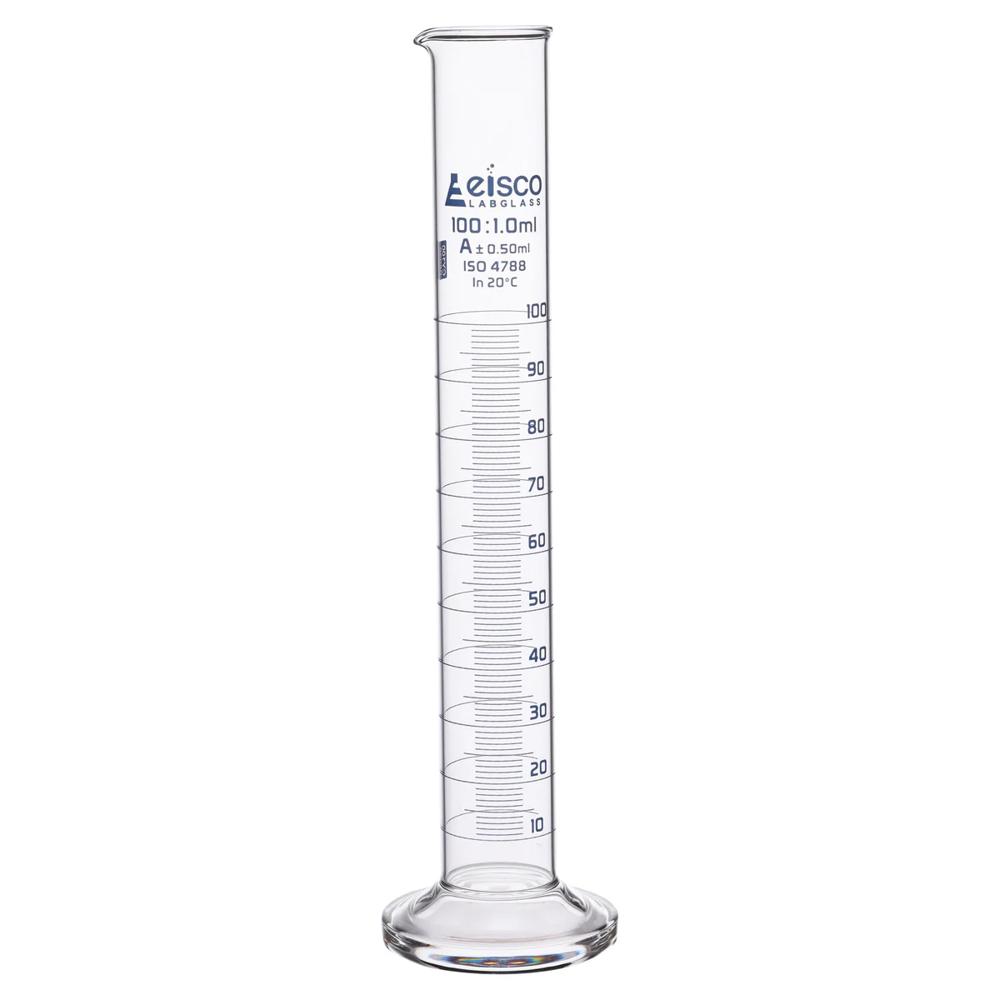
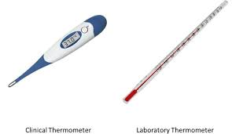
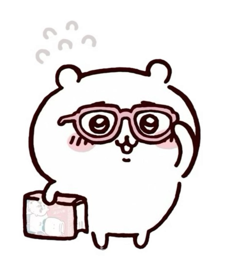

Measurement 𓏲ּ𝄢
Introduction to Measurement
Measurement is the process of finding the size, length, mass, or time of something using numbers and standard units. It helps us compare objects and describe the world accurately in science and daily life.
Introduction to Measurement
Measurement is the process of finding the size, length, mass, or time of something using numbers and standard units. It helps us compare objects and describe the world accurately in science and daily life.
| Physical Quantity | Unit | Symbol |
| Length | Meter | (m) |
| Mass | Kilogram | (kg) |
| Time | Second | (s) |
| Temperature | Degree Celsius | (°C) |
These are standard units used in the International System of Units (SI).
Standard form is used to write very large or very small numbers.
It is written as: a × 10n
Example:
| Prefix | Symbol | Value |
| Kilo | k | 10³ |
| Hecto | h | 10² |
| Deca | da | 10¹ |
| Deci | d | 10⁻¹ |
| Centi | c | 10⁻² |
| Milli | m | 10⁻³ |
Examples:
To convert units:
Example 1 (Length)
Example 2 (Mass)
Example 3 (Time)
different measuring tools are used to measure different physical quantities accurately. Each tool has its own function and way of reading the measurement.
Trible Beam Balance

Function: A triple beam balance is used to measure mass of an object (unit Gram/g)
Parts:
How to Read It:
When the pointer is exactly at zero, the mass is correct.
Example:
100 g + 20 g + 3.5 g = 123.5 g
Graduated Cylinder

Function: Used to measure the volume of liquids. (Unit: Milliliter/ mL or cubic centimeter/cm³ )
How to Read It:
Always read the bottom of the meniscus, not the top. Graduated cylinders are more accurate than beakers.
Thermometer

Function: Used to measure temperature. (Unit:Degree Celsius/°C)
Types:
How to Read It:
Example:
If the liquid stops at 25, the temperature is 25°C.
Vernier Caliper
Function: Used to measure temperature. (Unit:Degree Celsius/°C)
Types:
How to Read It:
Example:
If the liquid stops at 25, the temperature is 25°C.
